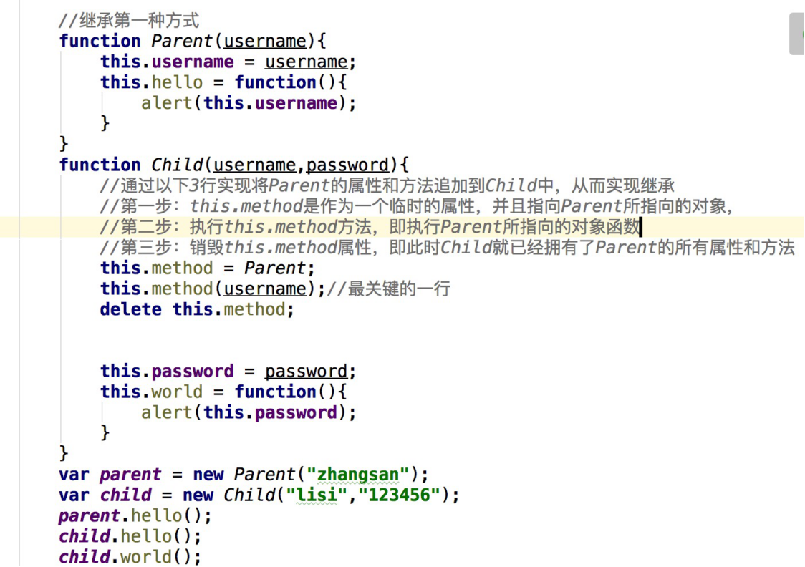

第一节
1.什么是闭包
闭包就是能够读取其他函数内部变量的函数。在JS中，只有函数内部的子函数才能读取局部变量，因此可以把闭包简单理解为”定义在一个函数内部的函数”。
function fn() {
var b = 1;
//闭包
function box() {
//
console.log(b);
}
//返回一个函数，这个函数就是一个闭包
return box;
}
//res 就是 box 函数
var res = fn();
//2秒以后调用res函数，还是能打印b的值,闭包能让局部变量常驻内存
setTimeout(function() {
res();
}, 2000);
2.闭包的特点
1：可以读取函数内部的变量。
变量的作用域无非就是两种：全局变量和局部变量。
JS语言的特殊之处，就在于函数内部可以直接读取全局变量。另一方面，函数外部自然无法读取函数内的局部变量
2：让这些变量的值始终保存在内存中。
闭包的应用场景
1：函数作为返回值。
function box() {
var n = 1; //
function cox() {
n++;
return n;
}
return cox;
}
//res 就是一个闭包 ，n像是一个全局变量
var res = box();
console.log(res()); //2
console.log(res()); //3
2：函数作为参数被传递
回调函数
第二节
- 掌握闭包的特点和原理
- 掌握闭包的应用场景
第三节
- 构造函数继承
本质是在子类中，调用父类构造函数，从而让子类拥有父类的属性和方法

- call/apply方法
all和apply都是为了改变某个函数运行时的context即上下文而存在的，换句话说，就是为了改变函数内部this的指向。
二者作用完全一样，只是接受参数的方式不太一样。
fn.call(obj, arg1, arg2 [, argN]);
call方法是Function类中的方法
call方法的第一个参数的值赋值给类(即方法)中出现的this
call方法的第二个参数开始依次赋值给类(即方法)所接受的参数
注意：调用函数的call或者apply方法相当于是调用函数
function box(a,b){
console.log(this,a,b)
}
var arr = [1111];
//使用arr改变的 box中this
box.call(arr,1,3)
fn,.apply(obj, [arg1, arg2,…, argN]);
apply以数组的形式传参，call是以列表的形式
apply方法接受2个参数，
A、第一个参数与call方法的第一个参数一样，即赋值给类(即方法)中出现的this
B、第二个参数为数组类型，这个数组中的每个元素依次赋值给类(即方法)所接受的参数
function box(a,b){
console.log(this,a,b)
}
var arr = [1111];
//使用arr改变的 box中this
box.apply(arr,[2,4])
利用apply使用math的min和max 方法
var arr1 = [1,2,3,4,5,6,6,45,45];
console.log(Math.min.apply(null,arr1));
console.log(Math.max.apply(null,arr1));
- call/apply继承


- prototype原型
大部分面向对象的编程语言，都以“类”（class）为基础，实现对象的继承。JavaScript 语言不是如此，它的对象继承以“原型对象”（prototype）为基础。
JavaScript 通过构造函数生成新对象，因此构造函数可以视为对象的模板。实例对象的属性和方法，可以定义在构造函数内部。
function Cat(name, color) {
this.name = name;
this.color = color;
this.meow = function () {
console.log('喵喵');
};}
var cat1 = new Cat('大毛', '白色');
var cat2 = new Cat('二毛', '黑色');
cat1.meow === cat2.meow// false
上面代码中，Cat函数是一个构造函数，函数内部定义了name属性和color属性，所有实例对象（上例是cat1）都会生成这两个属性，即这两个属性会定义在实例对象上面。
通过构造函数为实例对象定义属性，虽然很方便，但是有一个缺点。同一个构造函数的多个实例之间，无法共享属性，从而造成对系统资源的浪费。
cat1和cat2是同一个构造函数的两个实例，它们都具有meow方法。由于meow方法是生成在每个实例对象上面，所以两个实例就生成了两次。也就是说，每新建一个实例，就会新建一个meow方法。这既没有必要，又浪费系统资源，因为所有meow方法都是同样的行为，完全应该共享。
这个问题的解决方法，就是 JavaScript 的原型对象（prototype）。
- prototype的概念
每一个构造函数都有一个prototype属性，这个属性会在生成实例的时候，成为实例对象的原型对象。
JavaScript 的每个对象都继承另一个对象，后者称为“原型”（prototype）对象。
一方面，任何一个对象，都可以充当其他对象的原型；另一方面，由于原型对象也是对象，所以它也有自己的原型。null也可以充当原型，区别在于它没有自己的原型对象。
JavaScript 继承机制的设计就是，原型的所有属性和方法，都能被子对象共享。
下面，先看怎么为对象指定原型。
每一个构造函数都有一个prototype属性，这个属性会在生成实例的时候，成为实例对象的原型对象
function Animal(name) {
this.name = name;
}
Animal.prototype.color = 'white';
var cat1 = new Animal('大毛');
var cat2 = new Animal('二毛');
cat1.color // 'white'
cat2.color // 'white'
上面代码中，构造函数Animal的prototype对象，就是实例对象cat1和cat2的原型对象。原型对象上添加一个color属性，结果，实例对象都继承了该属性。
原型对象的属性不是实例对象自身的属性。只要修改原型对象，变动就立刻会体现在所有实例对象上。
Animal.prototype.color = 'yellow';
cat1.color // "yellow"
cat2.color // "yellow"
上面代码中，原型对象的color属性的值变为yellow，两个实例对象的color属性立刻跟着变了。这是因为实例对象其实没有color属性，都是读取原型对象的color属性。也就是说，当实例对象本身没有某个属性或方法的时候，它会到构造函数的prototype属性指向的对象，去寻找该属性或方法。这就是原型对象的特殊之处。
如果实例对象自身就有某个属性或方法，它就不会再去原型对象寻找这个属性或方法。
总结一下，原型对象的作用，就是定义所有实例对象共享的属性和方法。这也是它被称为原型对象的原因，而实例对象可以视作从原型对象衍生出来的子对象

- 原型链继承
原型链
对象的属性和方法，有可能定义在自身，也有可能定义在它的原型对象。由于原型本身也是对象，又有自己的原型，所以形成了一条原型链（prototype chain）。比如，a对象是b对象的原型，b对象是c对象的原型，以此类推。
如果一层层地上溯，所有对象的原型最终都可以上溯到Object.prototype，即Object构造函数的prototype属性。那么，Object.prototype对象有没有它的原型呢？回答是有的，就是没有任何属性和方法的null对象，而null对象没有自己的原型。
“原型链”的作用是，读取对象的某个属性时，JavaScript 引擎先寻找对象本身的属性，如果找不到，就到它的原型去找，如果还是找不到，就到原型的原型去找。如果直到最顶层的Object.prototype还是找不到，则返回undefined。
举例来说，如果让某个函数的prototype属性指向一个数组，就意味着该函数可以当作数组的构造函数，因为它生成的实例对象都可以通过prototype属性调用数组方法
var MyArray = function () {
};
//
MyArray.prototype = new Array();
var mine = new MyArray();
mine.push(1, 2, 3);
mine.length //
上面代码中，mine是构造函数MyArray的实例对象，由于MyArray的prototype属性指向一个数组实例，使得mine可以调用数组方法（这些方法定义在数组实例的prototype对象上面）。
原型链继承就是利用这个原理
将一个构造函数的原型指向另一个构造函数的实例对象来实现继承。
function Box() { //Box构造
this.name = 'Lee';
}
function Desk() { //Desk构造
this.age = 100;
}
Desk.prototype = new Box(); //Desc继承了Box，通过原型，形成链条
var desk = new Desk();
alert(desk.age);
alert(desk.name); //得到被继承的属性
- 混合继承
结合使用原型链与构造函数继承
function Box(age) {
this.name = 'Lee'
this.age = age;
}
Box.prototype.run = function () {
return this.name + this.age;
};
function Desk(age) {
Box.call(this, age); //构造函数继承继承了 name 和age 属性
}
Desk.prototype = new Box(); //原型链继承 run方法
var desk = new Desk(100);
alert(desk.run());
第四节
掌握继承的原理
第五节：强化练习
掌握es5继承，回顾es6继承